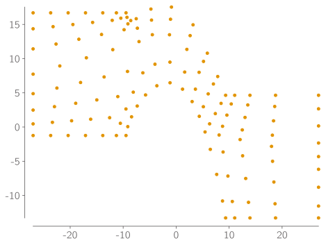
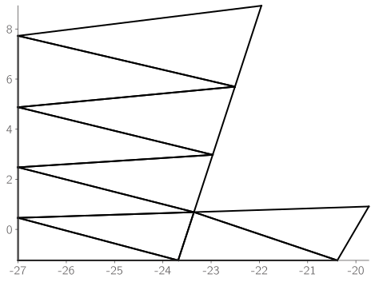
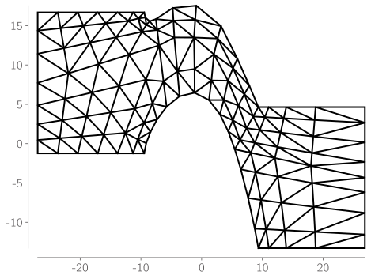
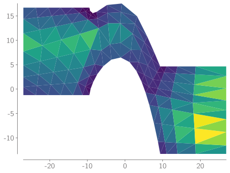

2D Triangular Meshes#
import numpy as np
import matplotlib.pyplot as plt
import matplotlib_inline
matplotlib_inline.backend_inline.set_matplotlib_formats("pdf", "svg")
import niceplots
plt.style.use(niceplots.get_style())
colors = niceplots.get_colors_list()
Part 1: Node coordinates#
nodeCoordinates = np.loadtxt("meshes/blade0.node", skiprows=1)
print(nodeCoordinates[:10])
[[-27.000049 -1.237215 ]
[-27.000049 0.46096024]
[-27.000049 2.4792453 ]
[-27.000049 4.87798158]
[-27.000049 7.728885 ]
[-23.6831689 -1.237215 ]
[-23.35562958 0.68898222]
[-22.96704546 2.97778661]
[-22.50590944 5.69755045]
[-21.95854535 8.92951054]]
fig, ax = plt.subplots()
ax.plot(nodeCoordinates[:, 0], nodeCoordinates[:, 1], "o", clip_on=False, label="Nodes")
niceplots.adjust_spines(ax)

Part 2: Node connectivity#
The .elem file describes how the nodes are connected to form the triangular cells.
Each row in the file contains the indices of the three nodes that form a triangle.
# MAKE SURE TO SUBTRACT 1 FROM THE ELEMENT CONNECTIVITY BECAUSE PYTHON IS 0 INDEXED
nodeConnectivity = np.loadtxt("meshes/blade0.elem", skiprows=1, dtype=int) - 1
print(nodeConnectivity[:10])
[[ 0 5 1]
[ 5 6 1]
[ 1 6 2]
[ 6 7 2]
[ 2 7 3]
[ 7 8 3]
[ 3 8 4]
[ 8 9 4]
[ 5 10 6]
[10 11 6]]
# Naive plotting method
fig, ax = plt.subplots()
for cellNum in range(10):
for edgeNum in range(3):
node1 = nodeConnectivity[cellNum, edgeNum]
node2 = nodeConnectivity[cellNum, (edgeNum + 1) % 3]
ax.plot(
[nodeCoordinates[node1, 0], nodeCoordinates[node2, 0]],
[nodeCoordinates[node1, 1], nodeCoordinates[node2, 1]],
"-",
color="k",
clip_on=False,
)

# Smarter plotting method
fig, ax = plt.subplots()
ax.triplot(nodeCoordinates[:, 0], nodeCoordinates[:, 1], nodeConnectivity, color="k", clip_on=False)
niceplots.adjust_spines(ax)

Computing cell quantities#
def computeCellAreas(nodeCoordinates, nodeConnectivity):
numCells = nodeConnectivity.shape[0]
cellAreas = np.zeros(numCells)
node1 = nodeConnectivity[:, 0]
node2 = nodeConnectivity[:, 1]
node3 = nodeConnectivity[:, 2]
x1 = nodeCoordinates[node1, 0]
x2 = nodeCoordinates[node2, 0]
x3 = nodeCoordinates[node3, 0]
y1 = nodeCoordinates[node1, 1]
y2 = nodeCoordinates[node2, 1]
y3 = nodeCoordinates[node3, 1]
cellAreas[:] = np.abs(0.5 * (x1 * (y2 - y3) + x2 * (y3 - y1) + x3 * (y1 - y2)))
return cellAreas
def computeCellCentroids(nodeCoordinates, nodeConnectivity):
numCells = nodeConnectivity.shape[0]
cellCentroids = np.zeros((numCells, 2))
node1 = nodeConnectivity[:, 0]
node2 = nodeConnectivity[:, 1]
node3 = nodeConnectivity[:, 2]
x1 = nodeCoordinates[node1, 0]
x2 = nodeCoordinates[node2, 0]
x3 = nodeCoordinates[node3, 0]
y1 = nodeCoordinates[node1, 1]
y2 = nodeCoordinates[node2, 1]
y3 = nodeCoordinates[node3, 1]
cellCentroids[:, 0] = (x1 + x2 + x3) / 3
cellCentroids[:, 1] = (y1 + y2 + y3) / 3
return cellCentroids
cellAreas = computeCellAreas(nodeCoordinates, nodeConnectivity)
cellCentroids = computeCellCentroids(nodeCoordinates, nodeConnectivity)
fig, ax = plt.subplots()
ax.tripcolor(nodeCoordinates[:, 0], nodeCoordinates[:, 1], nodeConnectivity, cellAreas, cmap="viridis")
niceplots.adjust_spines(ax)

ax.triplot(nodeCoordinates[:, 0], nodeCoordinates[:, 1], nodeConnectivity, color="k", clip_on=False)
ax.plot(nodeCoordinates[:, 0], nodeCoordinates[:, 1], "o", clip_on=False, label="Nodes")
# fig
[<matplotlib.lines.Line2D at 0x7f4fd5a6e150>]
Cell connectivity#
Let’s use the cell connectivity information to plot lines between a few of the cells and their neighbours.
np.random.seed(0)
for ii in range(10):
cellIndex = np.random.randint(0, cellConnectivity.shape[0])
centroid = cellCentroids[cellIndex]
for jj in range(3):
neighborIndex = cellConnectivity[cellIndex, jj]
if neighborIndex >= 0:
neighborCentroid = cellCentroids[neighborIndex]
ax.plot([thisCentroid[0], neighborCentroid[0]],
[thisCentroid[1], neighborCentroid[1]],
'r-o')
fig
---------------------------------------------------------------------------
NameError Traceback (most recent call last)
Cell In[10], line 4
1 np.random.seed(0)
3 for ii in range(10):
----> 4 cellIndex = np.random.randint(0, cellConnectivity.shape[0])
5 centroid = cellCentroids[cellIndex]
6 for jj in range(3):
NameError: name 'cellConnectivity' is not defined